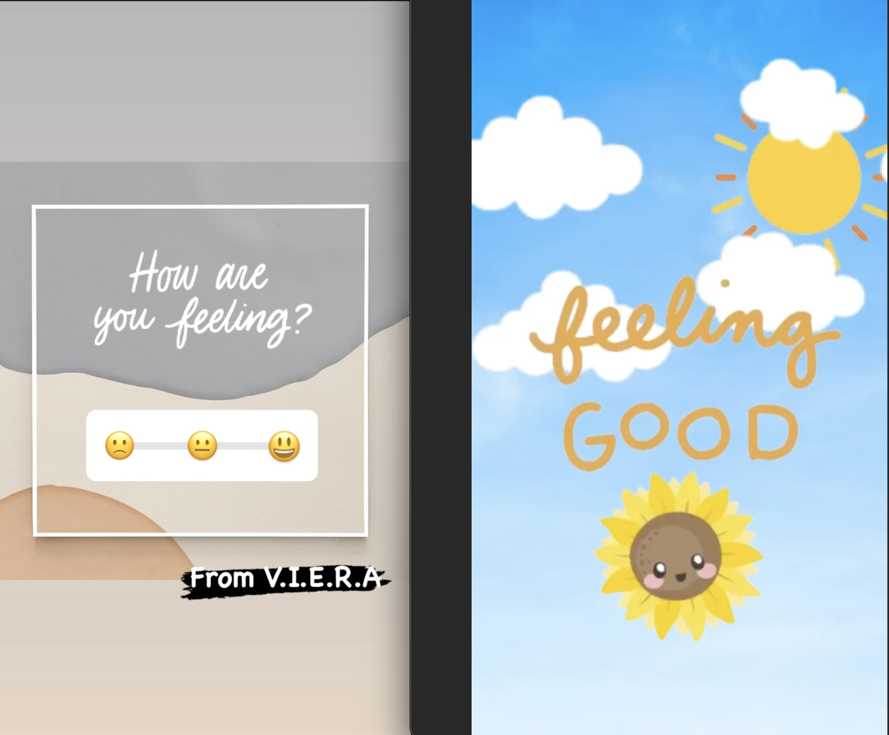
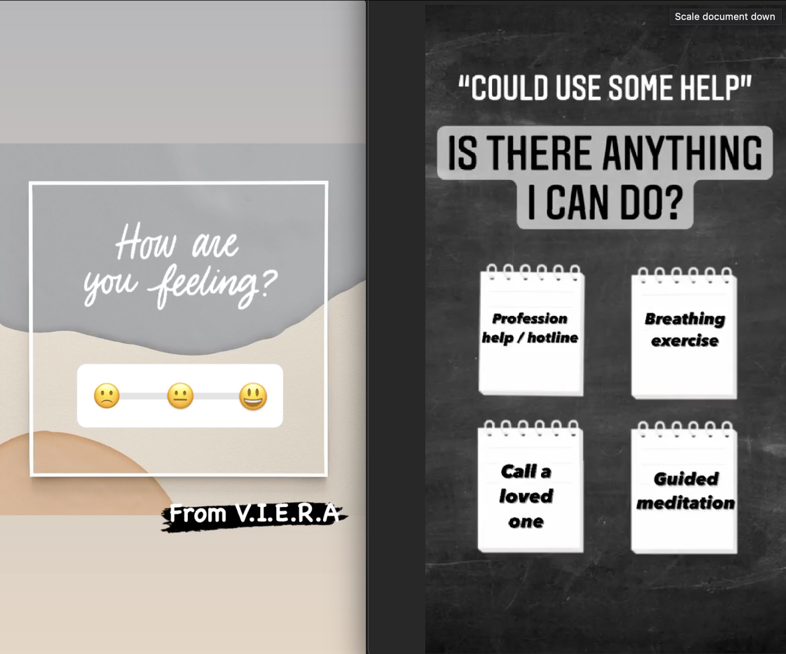
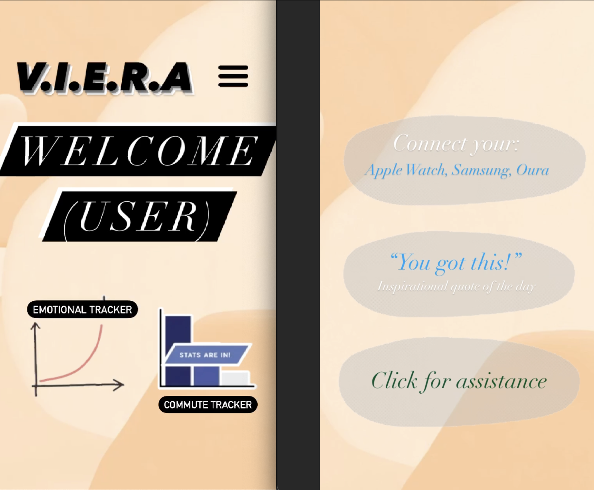

V.I.E.R.A
The APP Experience
-

"Feeling good at the moment!"
After answering the prompt of the welcome screen and answering "smiley face", it will bring you to a screen with an eye pleasing background and if you turn up the sound, it should play some relaxing music as well.
-

"Could use some help."
Answering with "sad face" will bring you to a screen with a list of options on how V.I.E.R.A. could help. Of course if you would not like to proceed with the resources you can skip to the home screen.
-

"Home Screen"
Here is what the home screen includes: Your "emotional tracker" from the welcoming screen, in depth details of your commute using VIERA, details on connecting other smart devices, an inspirational quote of the day, as well as other resources VIERA offers for more help.
V.I.E.R.A. stands for Voice Interactive Emotional Support Assistant. It will be your companion as you go about your daily routines to assure you you're not alone. You will be able to say "I'm bored" and it'll interact with games to keep you busy, to saying "I'm having a panic attack", and V.I.E.R.A will prompt with "pulling over protocol" and follow up with other tools to help. Tools such as; breathing exercises, dial in a friend/family member, and even show nearby restaurants or hospitals for whatever the user might need. As there is nothing to show for V.I.E.R.A. at this time, here is a dedicated space to showcase the late "Olly, the at home personality robot". Olly is a representation of what V.I.E.R.A. strives to become and more to help mental health.
Click here!
Inspiration
After the thought of V.I.E.R.A., I started looking into other smart speakers out there to see if there are anything similar to my idea. I came across Olly and seeing everything they were able to do as well as seeing how Olly reacts to the users expressions is something I would want V.I.E.R.A. to be like. To be able to check on the user as well as give suggestions on how to feel better. They both interact with the user in a positive direction.
Here's a video on how Olly did that. Great inspiration of what could be for V.I.E.R.A.